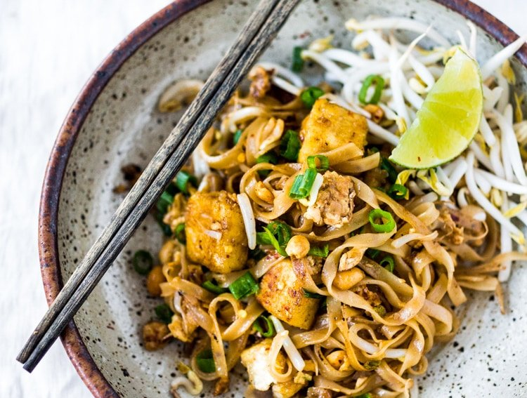

Pad Thai

Description
Chicken Pad Thai is a Thai dish of stir-fried rice noodles with eggs, vegetables and chicken in a
sauce of tamarind, fish, dried shrimp, garlic, red chilli pepper and sugar. Some of the
ingredients are provided on the side as condiments, including red chilli pepper,
lime wedges and peanuts.
Ingredients
- tamarind puree
- brown sugar
- fish sauce
- oyster sauce
- noodles
- canola oil
- onions
- garlic
- chicken breast
- 2 eggs
- beansprouts
- finely chopped peanuts
- lime wedges
- ground chilli
Steps
- Place noodles in a large bowl, pour over plenty of boiling water.
Soak for 5 minutes, then drain in a colander and quickly rinse under cold water.
- Mix Sauce (tamarind puree, brown sugar, fish sauce, oyster sauce) in small bowl.
- Heat 2 tbsp oil in a large non stick pan (or well seasoned skillet) over high heat.
Add garlic and onion, cook for 30 seconds.
- Add chicken and cook for 1 1/2 minutes until mostly cooked through.
- Push to one side of the pan, pour egg in on the other side. Scramble using the wooden spoon (add touch of extra oil if pan is too dry),
then mix into chicken.
- Add bean sprouts, tofu, noodles then Sauce.
- Toss gently for about 1 1/2 minutes until Sauce is absorbed by the noodles.
- Add garlic chives and half the peanuts. Toss through quickly then remove from heat.
- Serve immediately, sprinkled with remaining peanuts and lime wedges on the side, with a sprinkle of chilli and a
handful of extra beansprouts on the side if desired (this is the Thai way!). Squeeze over lime juice to taste before eating.